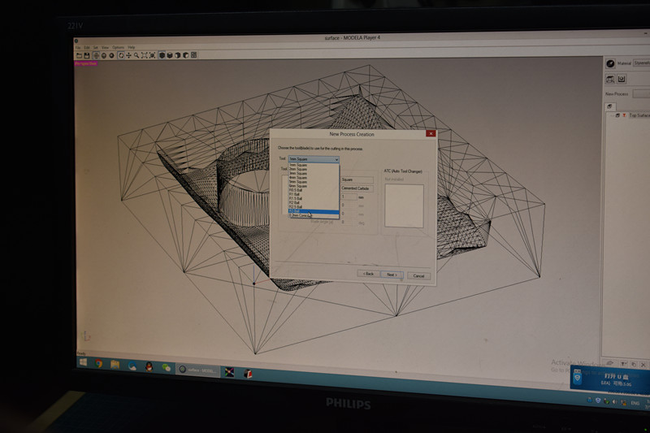
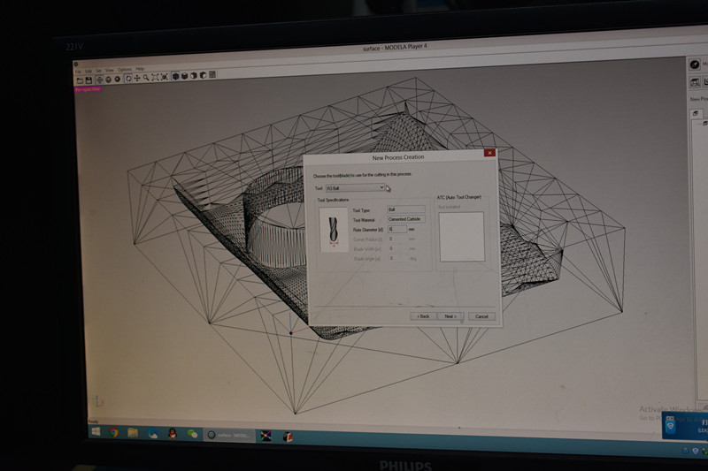
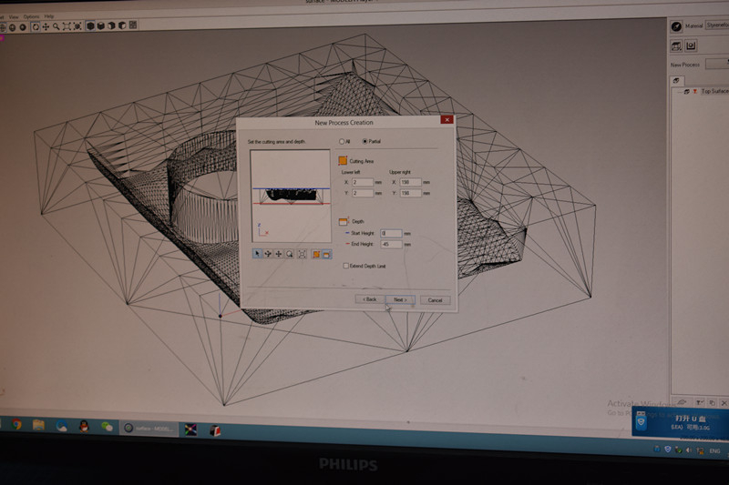
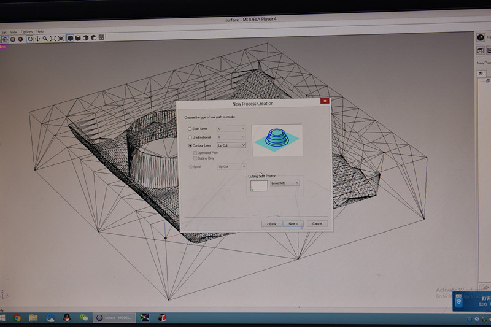
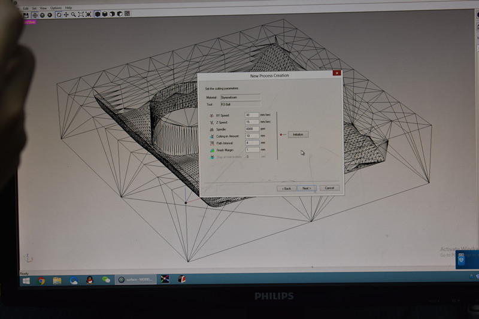
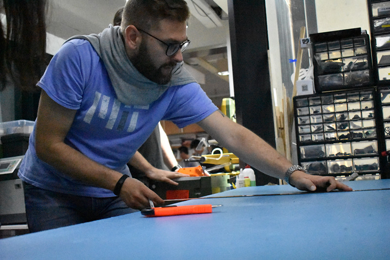
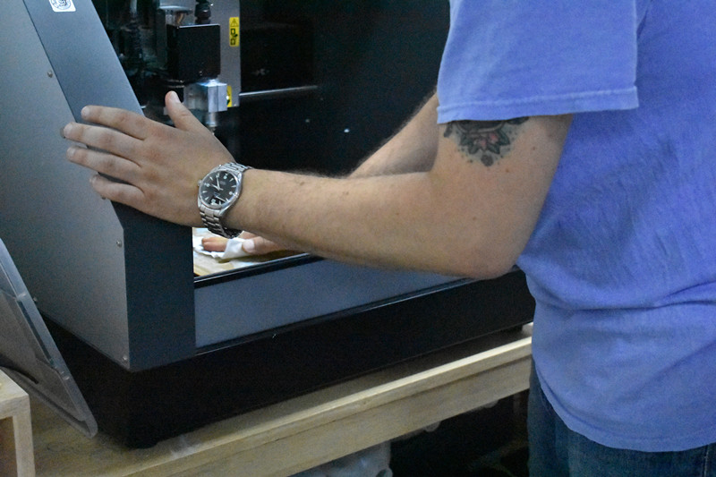
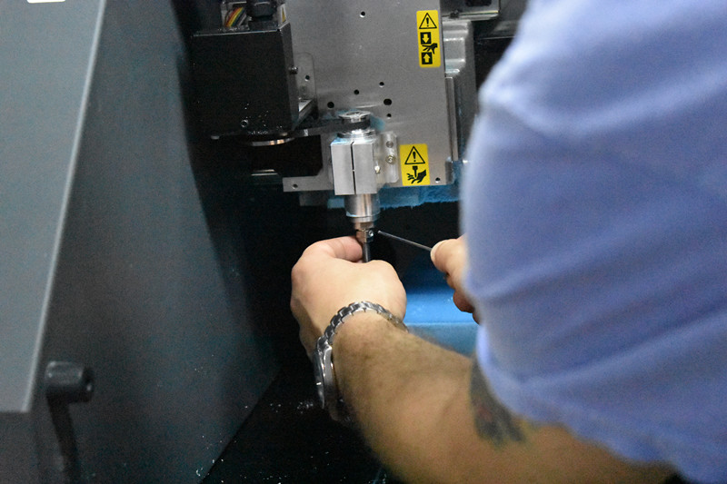

CNC is ccomputer comtrol cutting process We just have to watch the machine cut itself while the cutting progress, however we need to be clear about the settings.
We first inport our STL file into MODELA PLAYER, make sure the size is good, then we can start a new process--rafting
1 choose the right mill style


2 set the cutting edge ( we can adjust the number to avoid cutting in the air and srink the time

3 choose the ideal tool path type

4 set the speed of xyz, spindle, interval

the setting I uesd
rafting progress
finisning progress
cutting edge
x:2 Y:198
x:10 y:190
cutting depth
-1
cutting type
contuor: up cut
scan lines : x and y
xy speed
30mm/s
60mm/s
z speed
15mm/s
spindle
8000r/min
interval/td>
3mm
2mm
finish margn
1mm
0(finish)
Before we start, there were several things remaining. CUT the material CLEAN the bed PLACE the mill 